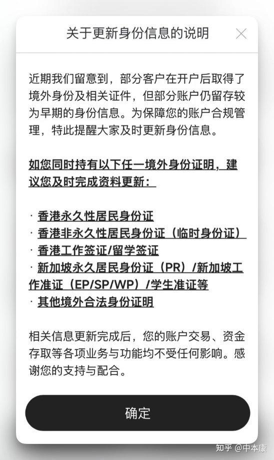

# 贸易顺差 = 外汇储备
# 结算货币：美元
外国买中国商品 & 中国买外国商品，绝大多数情况下，用 “美元” 结算。
注：现在人民币国际化在推进，有些国家也开始直接用人民币结算，但为了方便理解，我们这里以最主流的美元为例。
# 什么是 “贸易顺差”？为什么带来 “外汇储备”？
我们来走一遍完整的资金流转过程。
# 钱是怎么进来的？（出口创汇）
假设东莞的王老板做了一批鞋，卖给美国的超市，赚了 100 万美元。
美国超市把 100 万美元 打到了王老板的银行账户里。
问题来了： 王老板要给工人发工资、交电费、买皮料，国内只能用人民币，这 100 万美元 在国内花不出去啊！
解决办法： 王老板跑到中国工商银行（商业银行），说：“我要把这 100 万美元 换成人民币。”
工商银行按当天的汇率（假设是 1:7），收走了王老板的 100 万美元，给了王老板 700 万人民币。
此时，王老板拿人民币去发工资了。那 100 万美元 跑到了工商银行的手里。
# 钱是怎么出去的？（进口花汇）
假设深圳的李老板要从美国进口一批芯片，需要花 80 万美元。
李老板手里只有人民币，美国人不收啊。
解决办法： 李老板拿着 560 万人民币（80 万 x 7）跑到工商银行，说：“我要换 80 万美元 去买芯片。”
工商银行收走李老板的 560 万人民币，给了他 80 万美元。李老板把美元打给美国人，买回了芯片。
# 总计结算
把王老板（出口）和李老板（进口）加在一起看：
- 中国赚进来 100 万美元（出口）
- 中国花出去 80 万美元（进口）
- 100 万 - 80 万 = 20 万美元。这多赚出来的 20 万美元，就叫 “贸易顺差”。
这 20 万美元 最后去哪了？
工商银行每天接待无数个王老板和李老板，一天下来，发现手里多出了 20 万美元（因为换成人民币的人，比需要换美元的人多）。
工商银行拿着这么多美元也没用，于是它转身把这 20 万美元 卖给了中国人民银行（央行），央行印出相应的人民币给工商银行。
这 20 万美元，就锁在了中国央行的金库（账户）里，这就变成了国家的 “外汇储备”。
# 外汇市场在哪里？
买卖股票有 “上海证券交易所”，大家都在一个池子里撮合。但外汇市场是 OTC（场外交易）市场。
外汇市场没有一个集中的物理地点（没有 “外汇交易所” 大楼），它是一个全球连网的 “无形市场”。
可以把它理解为一个全球金融机构的 “超级微信群”+“内部交易软件”。
在这个市场里，主要有三层玩家在互相交易：
# 企业 / 个人 VS 商业银行（零售市场）
就是前面故事里的王老板、李老板，去工商银行、建设银行柜台或者网银上换汇。
- 谁和谁交易： 你 和 你的开户银行。
# 商业银行 VS 商业银行（银行间市场 —— 这是外汇市场的核心！）
工商银行今天收了太多美元，它不需要这么多；而中国银行今天可能有客户急需大量美元，美元不够了。
于是，工商银行和中国银行就会在那个 “超级交易软件” 上互相买卖。
不仅是中国国内的银行，中国的银行还会跟美国的花旗银行、英国的汇丰银行互相买卖。
在现实中，这个软件叫 路孚特（Refinitiv）、彭博（Bloomberg），在中国国内叫中国外汇交易中心（CFETS）。
- 谁和谁交易： 全球的各大银行、大型金融机构之间互相交易。我们平时在新闻里看到的 “今日汇率”，主要就是这帮大银行互相交易砍价砍出来的。
# 批发商双向报价（我既买，也卖）
在银行间外汇市场里，有资格的大银行被称为 “做市商（Market Maker）”。你可以把它们理解为实力雄厚的大批发商。
每天，这些大银行都会在交易系统里同时挂出两个价格：
- 买入价（我要收货）： 比如工商银行报价，7.10 元人民币收 1 美元。
- 卖出价（我要出货）： 比如工商银行报价，7.12 元人民币卖 1 美元。
(注：中间这 0.02 元的差价，就是银行赚的辛苦钱。)
全世界的银行都能在屏幕上看到工商银行的报价。如果别的银行觉得合适，鼠标一点，交易就瞬间达成了。
# 怎么报价和砍价？
全中国（乃至全球）的银行交易员，每天坐在电脑前，盯着这些交易软件。
- 工商银行的交易员在系统里挂单（喊话）：“我手里有 1000 万美元，我想换成人民币，7.15 我才卖！”（这叫卖出价 Ask）
- 建设银行的交易员在系统里挂单：“我客户急需美元，我想买 1000 万，但我最多只出 7.13！”（这叫买入价 Bid）
这时候，两人价格对不上，没法成交。
过了一会儿，建行急了，客户催着要美元，建行交易员就在系统里点了一下工行的报价，说：“算了，7.15 我买了！”
“叮！” 系统成交。
# 新闻里播报的 “今日汇率” 是怎么来的？
就在工行和建行以 7.15 成交的这一瞬间，交易软件上就会闪烁出一个最新价格：7.15。
紧接着下一秒，中国银行和农业银行以 7.149 成交了，屏幕上的数字就跳成了 7.149。
因为全世界成千上万家银行，每秒钟都在这个系统里进行成千上万笔的买卖，屏幕上那个疯狂跳动的数字，就是最新一笔成交的价格。
我们普通人在手机银行里看到的 “今日汇率”，就是银行根据这个系统里的实时批发价，稍微加一点手续费（点差），报给你的零售价。
你可能会问：既然每家银行、每一秒钟的价格都在变，那新闻联播里每天播报的 “今日人民币对美元汇率是 7.15” 是怎么来的？
这里要特别说一下我们中国的机制 ——“人民币汇率中间价”。
中国有一个官方机构叫 “中国外汇交易中心”。为了防止市场乱报价，每天早上开盘前，会有一个 “定基调” 的仪式：
- 早上 9:00，外汇交易中心给 14 家最大的 “做市商” 银行（中农工建、花旗、渣打等）发消息：“各位大佬，根据昨天的市场情况，你们觉得今天开盘价定多少合适？报个价上来。”
- 这 14 家银行会根据自己的模型和库存，各自提交一个价格。
- 外汇交易中心收到这 14 个价格后，去掉一个最高分，去掉一个最低分，剩下的求个平均值。
- 早上 9:15，官方正式对外公布：“今天的人民币对美元汇率中间价是 7.15！”
这个 7.15，就是当天的 “基准价”。
然后，早上 9:30 市场正式开盘，各大银行开始像前面说的那样，根据供求关系进行买卖。但是，中国央行有规定：你们银行之间怎么买卖砍价都可以，但当天的成交价，不能偏离这个 “中间价” 的上下 2%。（比如基准是 7.15，最高只能卖到 7.29，最低只能跌到 7.00）。
# 央行 VS 商业银行（宏观调控）
如果某段时间，大家都疯狂抛售人民币换美元，导致人民币贬值太快。
这时候，中国央行就会作为 “超级大 Boss” 下场。央行会打开自己的 “外汇储备” 金库，拿出美元，在市场上抛售，买回人民币。市面上美元多了，人民币少了，汇率就稳定住了。
- 谁和谁交易： 央行 和 各大商业银行。
# 现代中国 MMT
这里先抛出一个问题：
财政部先向银行注资 1 万亿，银行再向地方政府置换 1 万亿的债务。
-
从财政部的报表上，1 万亿的财政支出变成了价值 1 万亿的可增值的银行的股权（或其他等值抵押物）而不是增加了 1 万亿应收账款或赤字。
-
银行获得 1 万亿注资去置换 1 万亿等值地方政府的债务（提升了资本充足率和感官上 “相比民企而言更高质量的地方政府” 的贷款）
-
地方政府获得了银行的低息贷款去置换高息债务。
在这个链条下，虽然还是财政部支援了地方，但走了一圈之后，每个主体的报表都没有显示任何风险，而资产负债表变得更加好看，不仅解决了问题，从表报上看上去好像每个人都是赢家，那么受损的是谁呢？
# 基础知识：M0，M1，M2
-
M0：流通中的现金，实实在在的纸币和硬币
最直接的钱。
-
M1：随时能直接花的钱（狭义货币），M1 = M0 + 企业活期存款
当下现实购买力 —— 企业和机关团体手里马上能用来买东西、付工资的资金。
-
M2：要稍等才能花的钱（广义货币），M2 = M1 + 准货币，
准货币主要包括：
-
个人存款（不论活期还是定期，你的储蓄卡、存折里的钱都属于这一类）
-
企业定期存款
-
其他存款（如证券账户里的保证金、住房公积金存款等）
这些钱虽然不能像现金或企业活期存款那样立即直接支付（定期需要提前取、个人活期虽然刷卡扫码方便，但在统计上归入准货币），但随时可以取出来或转成活期，很容易转化为购买力。
M2 代表的是全社会的现实购买力加潜在购买力，也就是整个社会可能拿出来买东西的总钱数。
-
# 基础知识：印钱不一定会通货膨胀，还需要扩表
通胀的背后，是货币现象。
但货币扩张要作用于通胀，条件也是居民和企业部门资产负债表的扩张，说白了就是借钱。
现实中，国家印了钱，不是直接塞进你口袋里的，而是放在银行里，通过降息等方式鼓励大家去借。
- 居民（老百姓）借钱：比如你贷款买房、贷款买车、刷信用卡消费。你的负债变多了，但你手里能花的钱也变多了，这就叫居民资产负债表扩张。
- 企业（老板们）借钱：比如老板向银行贷款，去建新工厂、买新机器、招新员工。这就叫企业资产负债表扩张。
如果国家印了钱放在银行，但老百姓不敢借钱买房买车，老板也不敢借钱扩大生产，大家都捂着钱包不花钱，甚至还提前还贷（这叫资产负债表收缩）。那么，国家印的钱就全部 “堵” 在银行里，根本没有流到市场上去。
通货膨胀（物价上涨）的直接动力是货币增加，是 “需求大于供给”（买的人多，卖的东西少）。没有持续的大额消费支出增长、企业投资建厂购买设备支出，那通胀上涨的商品服务来源是哪个分项呢？根本没有来源嘛！
别忘了 资产=负债+净资产 ，在现代金融体系里，钱的本质是 “债务”（信用）
派生：通胀传导的时间差（坎蒂隆效应）
央行放水，钱不是均匀地 “下雨” 落到每个人头上，而是像 “开闸放洪” 一样，顺着河道流。
- 离水源越近的人（比如拿到低息贷款的大企业、金融机构），能在物价还没上涨时，用便宜的钱买下大量资产；
- 等钱流到最下游的普通打工人手里时（涨工资），物价早就涨上天了。
为什么不按人头发钱？
- 传统经济学主张 “举债扩张”（靠债务发行货币），是认为债务能逼着人去创造真正的财富（商品）。
老板找银行借了 1000 万，他不是拿去挥霍的，因为他要还本付息。为了还钱，他必须建工厂、买机器、招工人，生产出 10 万个新手机卖掉。这样，市场上多出了 1000 万的钱，但也多出了 10 万个新手机。钱变多了，但商品也变多了。债务就像一条鞭子，抽打着企业家去搞生产。
- 但笔者认为，直接等额发钱并不是 "通胀毒药"，它是一种被现行体制刻意冷落的、确实能缩小贫富差距的工具。 它的反对者之所以反对，更多是出于阶级利益（金融资本不希望绕过银行）、政治路径依赖、和对穷人消费决策的不信任，而不是单纯的经济学原理。
# M2 绝大部分是 “信用”，不是 “现金”
社会上庞大的钱（M2），绝大部分不是印钞机印出来的真金白银，而是银行通过 “放贷” 凭空记账创造出来的信用货币。 这个过程叫作 “派生” 或 “信用创造”。
【举个例子：村庄银行的货币魔法】
- 初始状态（M1 的诞生）：
假设村里只有你一个人有真实的现金 100 元（M0）。你把这 100 元存进村庄银行的活期账户。此时，银行的保险柜里有 100 元现金，你的账户里有 100 元存款。
此时：社会的总钱数（M1） = 100 元。 - 信用创造开始（M2 的膨胀）：
银行发现，你不可能每天把这 100 元全取出来。于是，银行决定把其中的 90 元借给村民老王，让他去开个包子铺（银行留 10 元作为准备金应付你取款）。
老王拿到 90 元贷款后，立刻向木匠老李买了 90 元的蒸笼。老李赚到钱，把这 90 元存进了银行的定期账户。
此时我们来算算账：- 你有 100 元活期存款（M1）。
- 老李有 90 元定期存款（属于 M2）。
- 此时：社会的总钱数（M2） = 100 + 90 = 190 元！
- 循环继续：
银行又拿老李存进来的 90 元，留下 9 元作准备金，把 81 元借给小赵。小赵买了砖头，卖砖头的人又把 81 元存进银行……
此时：社会的总钱数（M2） = 100 + 90 + 81 = 271 元！
【结论】
你看，最初明明只有 100 元的真金白银（基础），但经过银行的 “贷款 -> 存款 -> 再贷款 -> 再存款” 循环，社会上的账面总财富（M2）变成了 271 元甚至更多。
多出来的 171 元是什么？是 信用（老王和小赵承诺未来会还钱的借条）。
所以我们说：M2 的庞大，是建立在基础货币（央行印的现金 M0 + 银行在央行的准备金）之上，通过银行不断放贷（创造信用）膨胀出来的。 贷款创造存款，这就是现代货币的真相。
坏账导致 M2 缩减，因为 钱被 "还" 掉了，但银行不敢再 "借" 出去。
- 处置坏账时，存款被对冲消灭
银行收回贷款的本质是 "销账"—— 拿欠款人（或欠款人的抵押物卖出去了，产生了买家）的存款，去抵消贷款记录。比如变卖抵押房产时，买房人付出的那笔存款不是转给了别人，而是直接和坏账贷款在银行账上对冲归零、灰飞烟灭。社会上的存款总额（M2）就实打实少了这一笔。
- 更关键的：信用创造被掐断
正常情况下，旧贷款被偿还（M2 减少）的同时，银行会发放新贷款（M2 增加），一进一出，总量稳定。
但坏账让银行亏了钱、怕了，于是不敢再放新贷。结果就是：
- 出水管照常漏水（旧贷款继续偿还，M2 持续被消灭）
- 进水管却关闭了（没有新贷款，没有新的 M2 被创造）
所以 M2 缩减的真正杀伤力，不在于 "销掉的那一笔坏账"，而在于它吓停了整个银行体系的放贷意愿。 一笔坏账消灭的钱有限，但 "不敢再借" 导致的信用收缩，才是 M2 大幅萎缩的主因 —— 这就是常说的 "去杠杆" 或 "资产负债表衰退"。
# 什么是 MMT（现代货币理论）？
MMT 的核心就是：政府可以无上限地印钱，不需要像以前那样非得有人买国债才行。
- 传统经济学认为：国家要花钱，得先收税；钱不够，就得向老百姓或外国人借钱（发国债）。
- MMT 认为： 国家自己就是印钞机啊！只要国家发行的钱大家认（比如规定交税必须用这个钱），国家就可以随便印钱去解决问题。
MMT 的唯一限制： 印钱不能毫无节制，唯一的底线是 “不能引发恶性通货膨胀”（不能让物价飞涨）和 “汇率不能崩盘” （钱不能在国际上变成废纸）。只要物价不涨，钱就可以一直印。
如果一个国家能通过某种手段（比如压低工资让大家没钱消费、或者强行价格管制）把物价死死压住，让通胀起不来。
汇率就成了唯一的刹车片
（维持汇率需要贸易顺差）中国政府为了维持 MMT，就会走向 “顺差就是一切，一切为了顺差”
（为便宜商品倾销海外的 顺差 & 压低 通胀）中国特意打压劳动价值，鼓励大家去卷
国家手里有很多钱（或者通过 MMT 印出来的钱），不知道往哪投，就去砸各种高科技和基建。但这有极大的风险：
-
科技树点错的风险： 就像当年日本倾国之力搞氢能源、苏联搞三进制计算机，最后技术路线错了，全盘皆输。如果中国现在也用举国体制乱投钱，万一投错了方向怎么办？
-
尾大不掉的风险： 国企和政府官员为了怕担责任，即使发现某项技术落后了，也不敢立刻淘汰（因为淘汰了就成了坏账）。他们会继续往这个无底洞里砸钱，维持表面的繁荣。
-
沉没成本变债务： 砸进去的钱虽然打水漂了，但当初借来的债务是不会凭空消失的。几十年后，这些无效的基建和落后的产能，会变成压垮后人的巨额债务。
注意：通缩、经济危机中 最狠的一环就是企业倒闭，银行破产；而其原因为：现金流、收入下降，但是债务没变，还贷负担越来越重！
# 五险一金
# 公积金
“公积金” 的全称叫住房公积金，是中国内地特有的一项强制性住房储蓄制度。可以把它理解为 “国家强制你和老板一起存的买房专用小金库”
- 强制储蓄，老板倒贴： 假设你每个月工资 1 万块。国家规定，你每个月必须从工资里扣除一部分（比如 12%，也就是 1200 元）存入公积金账户；同时，你的公司也必须自掏腰包，拿出同样的金额（1200 元）存入你的账户。这样你每个月账户里就多了 2400 元。
- 钱是谁的？ 毫无疑问，这笔钱完全是你个人的合法财产。
- 有什么限制？ 这是最关键的一点。虽然钱是你的，但你不能随便取出来花。它被锁在国家（各地公积金管理中心）的账户里。只有当你满足特定条件时（比如买房、租房、翻建房屋、退休、或者离开中国大陆定居等），你才能拿着证明材料去把钱提出来。
总结一下公积金的特点： 它是你自己的钱，但控制权和管理权在国家手里，你只有 “有条件的使用权”。
# 社保
社保通常指 “五险”：养老保险、医疗保险、失业保险、工伤保险、生育保险。
中国大陆是强制缴纳社保的（《劳动法》规定）
- 医保个人账户改革
以前，你和公司交的医疗保险，有一大半会打入你个人的医保卡账户，你可以去药店买药，这笔钱是你自己的。
但是前两年政策突然改了：公司给你交的那部分钱，不再打入你的个人账户了，而是被国家收走，放进了一个叫 “统筹基金” 的大池子里，用来给所有人报销门诊费。
老百姓的直观感受是：“国家缺钱了，把我医保卡里的钱抢走去填窟窿了。” 这件事在当时引发了极大的不满。
- 双轨制
“双轨制” 就是 “两套标准，区别对待”。
历史上最著名的是 “养老金双轨制”：以前体制内（公务员）不用交养老保险，退休后却能拿极高的退休金；体制外（企业员工）每个月苦哈哈地交钱，退休后拿得却很少。
在这里，“双轨” 的意思是：政策制定者（体制内）会制定一套对自己有利的规则，同时制定另一套对普通人严苛的规则。
- 视同缴纳
“视同缴纳”（字面意思：虽然你没交钱，但我把你看作是已经交过钱了）是中国大陆养老金制度改革遗留下来的一个极具争议的历史产物。
- 历史背景： 在上世纪 90 年代之前，中国没有现在的 “个人交钱、国家统筹” 的养老金制度。那时候工人退休了，由国家或工厂直接发退休工资。
- 制度建立： 90 年代国家开始建立现代养老金制度（也就是现在的社保），要求大家每个月从工资里扣钱存起来。
- 问题来了： 那些已经工作了二三十年的老职工，他们年轻时并没有交过这笔钱（因为当时没这个制度），他们的养老金账户是空的。那他们退休了拿什么钱？
- 国家的解决办法（视同缴纳）： 国家规定，这些老职工在制度建立之前的工龄， “视同” 他们已经交过社保了。
因为养老金的本质是一个 “资金池”。
老一辈（特别是体制内老一辈）年轻时 一分钱社保都没交过，仅仅凭借一张 “视同缴纳” 的纸面凭证，现在每个月从池子里领走大几千甚至上万的退休金。而这个池子里的钱是哪里来的？是现在的年轻人、体制外的打工人每个月实打实从工资里扣除的真金白银。
# 香港资金管制
